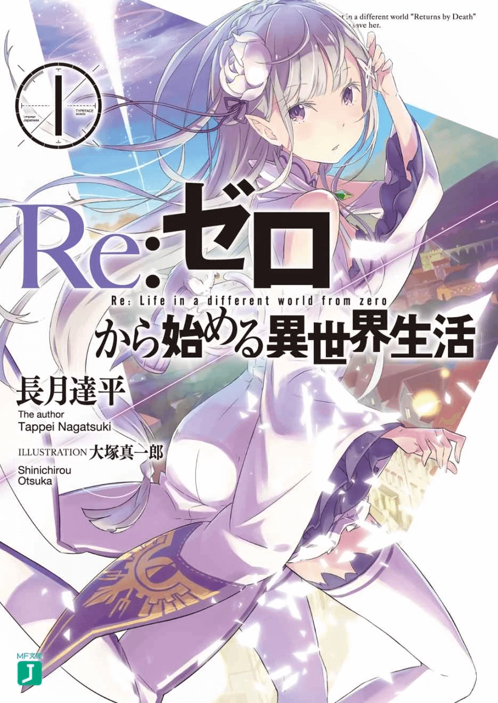

Re:Zero kara Hajimeru Isekai Seikatsu Volumen 1
Subaru Natsuki es un estudiante corriente de instituto que se pierde en un mundo alternativo, donde una preciosa chica de pelo plateado lo rescata. Para devolverle el favor decide quedarse con ella, pero el destino con el que carga la muchacha es mucho más pesado de lo que Subaru puede imaginar. Los enemigos atacan sin descanso, uno tras otro, hasta que finalmente mueren tanto él como la chica. Es entonces cuando Subaru descubre que tiene el poder de dar marcha atrás en el tiempo y volver al inicio de la historia, al punto en el que llegó al mundo desconocido. El problema es que él es el único que recuerda lo ocurrido.
Lista de capitulos
- Prologo
- El fin del principio
- Una prueba demasiado tarde
- El conflicto tardío
- Fin y principio
- Cuarto encanto en el tiempo
- Vivir en un mundo diferente desde cero
- Epilogo: La luna esta mirando